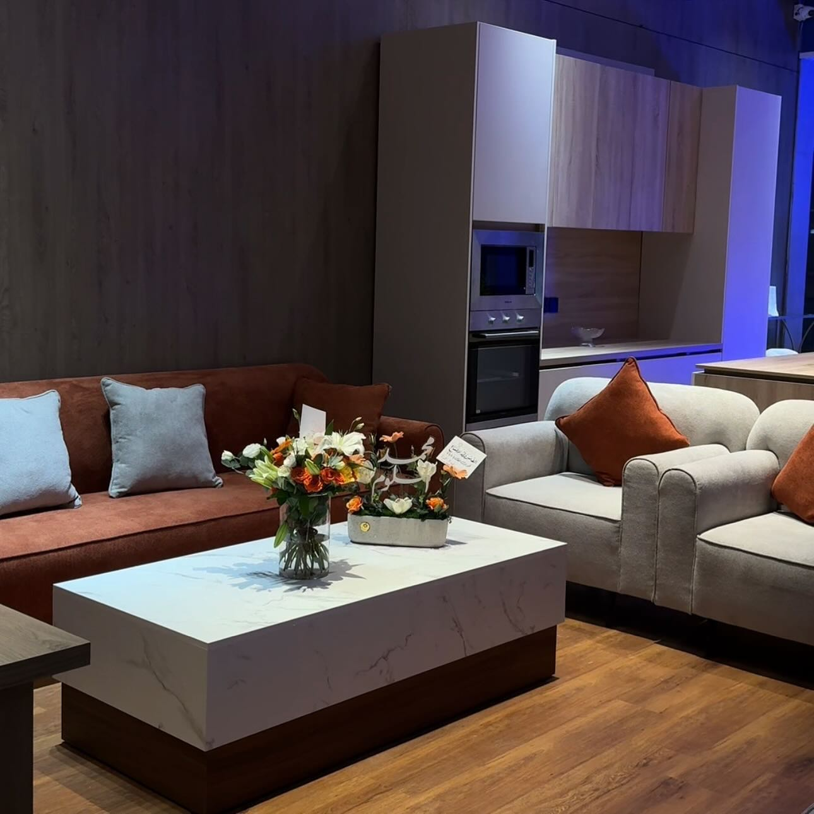
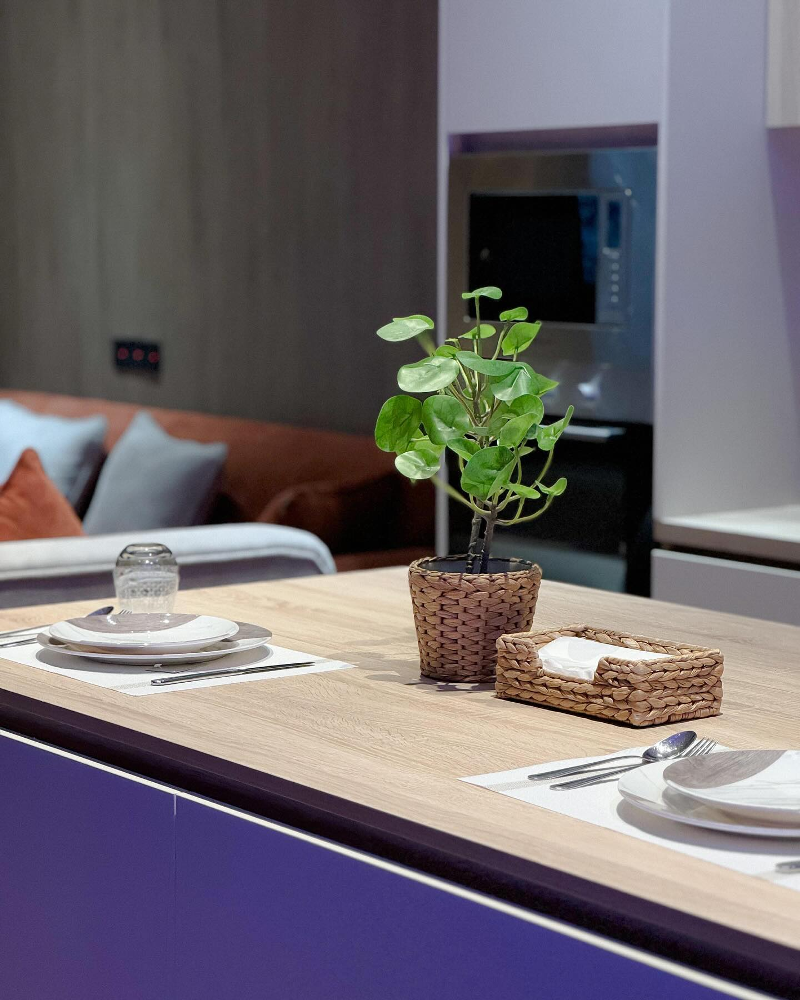
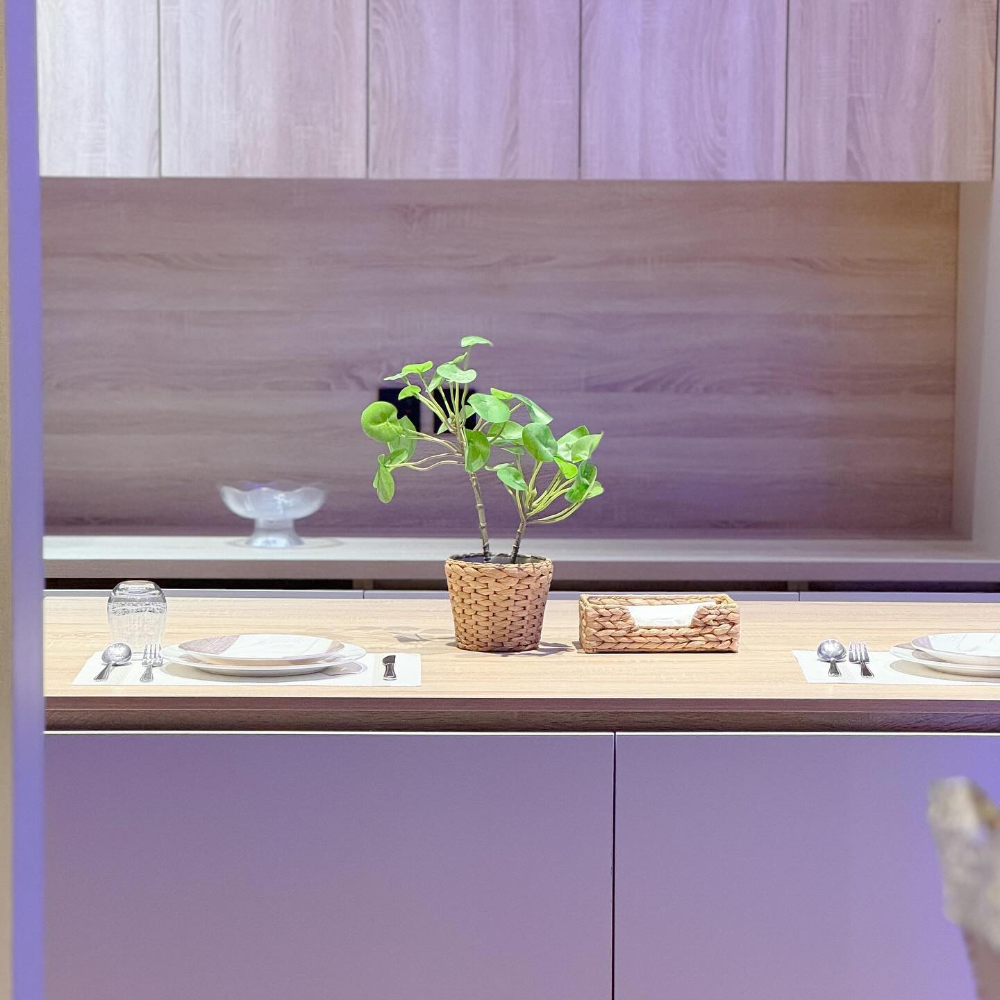
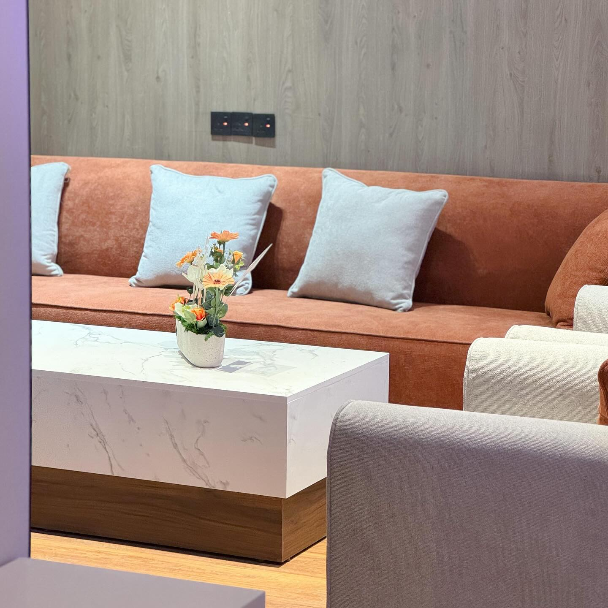
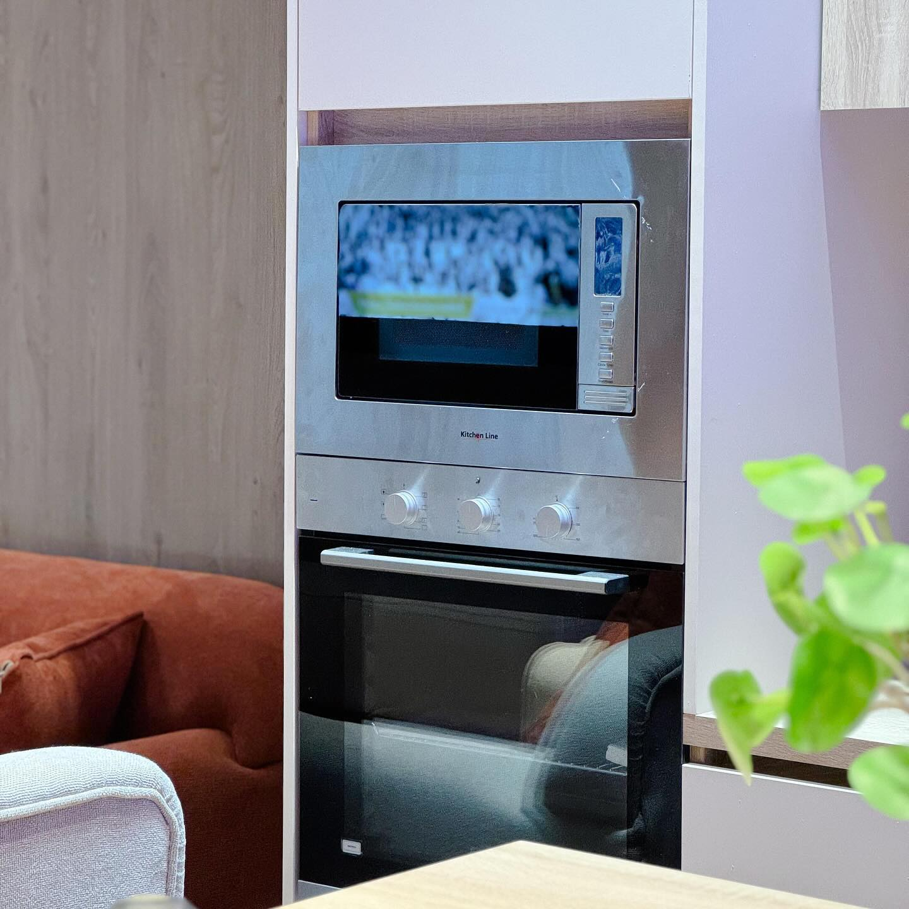

التصميم الداخلي
تصور متكامل للعلاقات بين الأثاث، الأسطح، الإضاءة ومسار الحركة.

تصميم داخلي، مطابخ وخزائن بتكوينات مدروسة تجمع بين راحة الاستخدام وهدوء التفاصيل — مع تواصل مباشر في بريدة والرياض.
بدل التعامل مع كل عنصر كقطعة منفصلة، تبدأ التجربة من فهم المساحة ثم ربط التكوين والخامات والتخزين في مشهد متوازن.
تصور متكامل للعلاقات بين الأثاث، الأسطح، الإضاءة ومسار الحركة.
توزيع يراعي الاستخدام اليومي، الأجهزة والتخزين دون التخلي عن حضور التصميم.
وحدات مخصصة تستثمر المساحة وتقدم تقسيمًا داخليًا واضحًا وسهل الوصول.

المطبخ هنا لا يقف منفصلًا عن بقية المكان؛ الخامة والإضاءة وخطوط الحركة تتكامل لتصنع مساحة عملية وهادئة في الوقت نفسه.
مجموعة مختارة من الصور المتاحة عبر الحساب الرسمي، مرتبة لتعرض لغة التصميم والتفاصيل التنفيذية بوضوح.


خطوات عملية تساعد على تحويل الاحتياج من فكرة عامة إلى تفاصيل قابلة للنقاش والتنفيذ.
صور ومقاسات تقريبية ونوع الخدمة المطلوبة.
ألوان أو صور مرجعية توضّح التفضيلات.
تكوين يناسب الحركة والتخزين وهوية المكان.
تنسيق التفاصيل التالية عبر القناة الرسمية.
أرسل صور المكان والمقاسات التقريبية عبر واتساب، وحدد إن كان المطلوب تصميمًا داخليًا أو مطبخًا أو خزائن.

 واتساب
واتساب